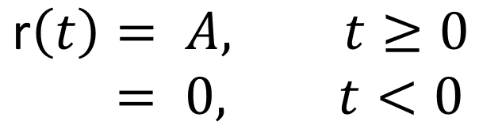
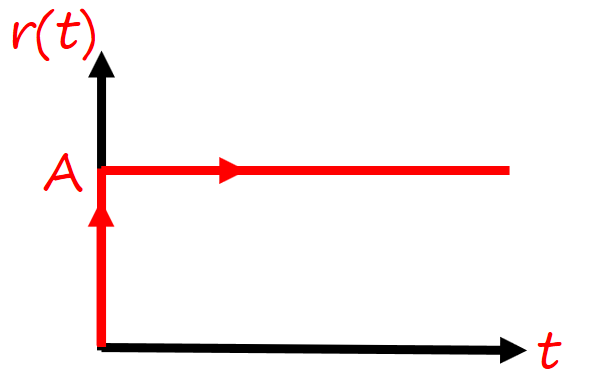
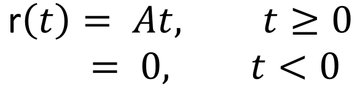
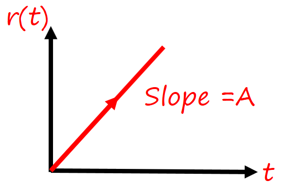
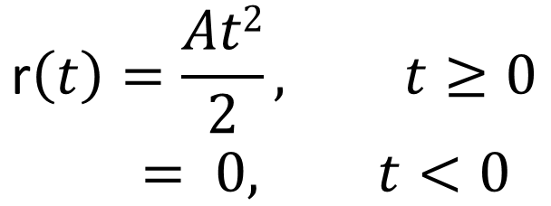
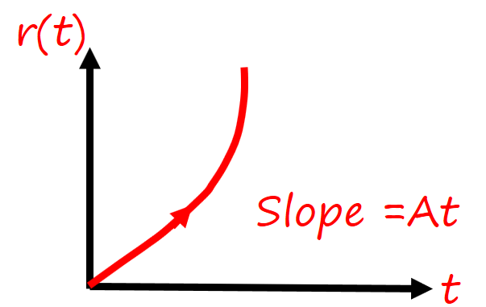
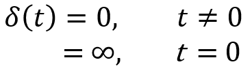
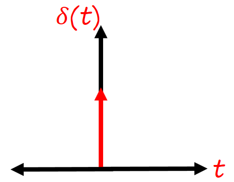
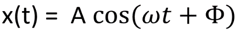
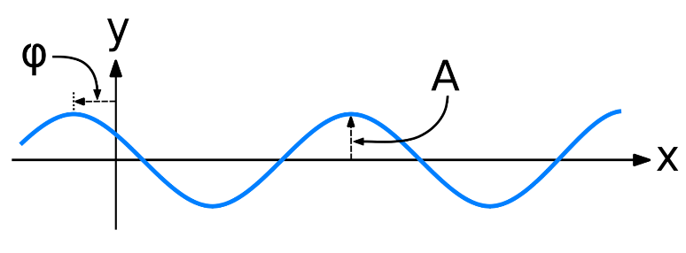

HOME BLOG EBOOKS ABOUT CONTACT SHOP
The time response analysis of Control systems is done with the help of a few Standard test inputs. The evaluation of the system is done on the basis of the system response to these standard test inputs. Once the system behaves satisfactorily to these test input, its time response to the actual inputs is also assumed to be satisfactory. In practice, many signals can be used as test inputs, but the commonly used standard test inputs are:
Step input:
The Step function is defined as,

The Step Input is like the a switch being suddenly turned on and never turned back off. When A = 1 it is called the Unit step function.

The Laplace transform of the step function is A/s.
Ramp input:
The Ramp function is defined as,

When A = 1 it is called the Unit ramp function.

The Laplace transform of the ramp function is A/s2.
Parabolic input:
The Parabolic function is defined as,


The Laplace transform of the parabolic function is A/s3.
Impulse input:
The Impulse function is defined as,


Refer Unit Impulse Response
The Laplace transform of the Impulse function is 1.
Sinusoidal input:
Impulse function is defined as,


Where A is the Amplitude (maximum height of the signal), ω is the angular frequency and ɸ is the phase. Sine waves and Cosines waves are basically the same, except that they start at different times (i.e. they are 90 degrees out of phase).
Usually the Impulse signal is used for Transient response analysis and the Steady state analysis is carried out using all the other test signals.